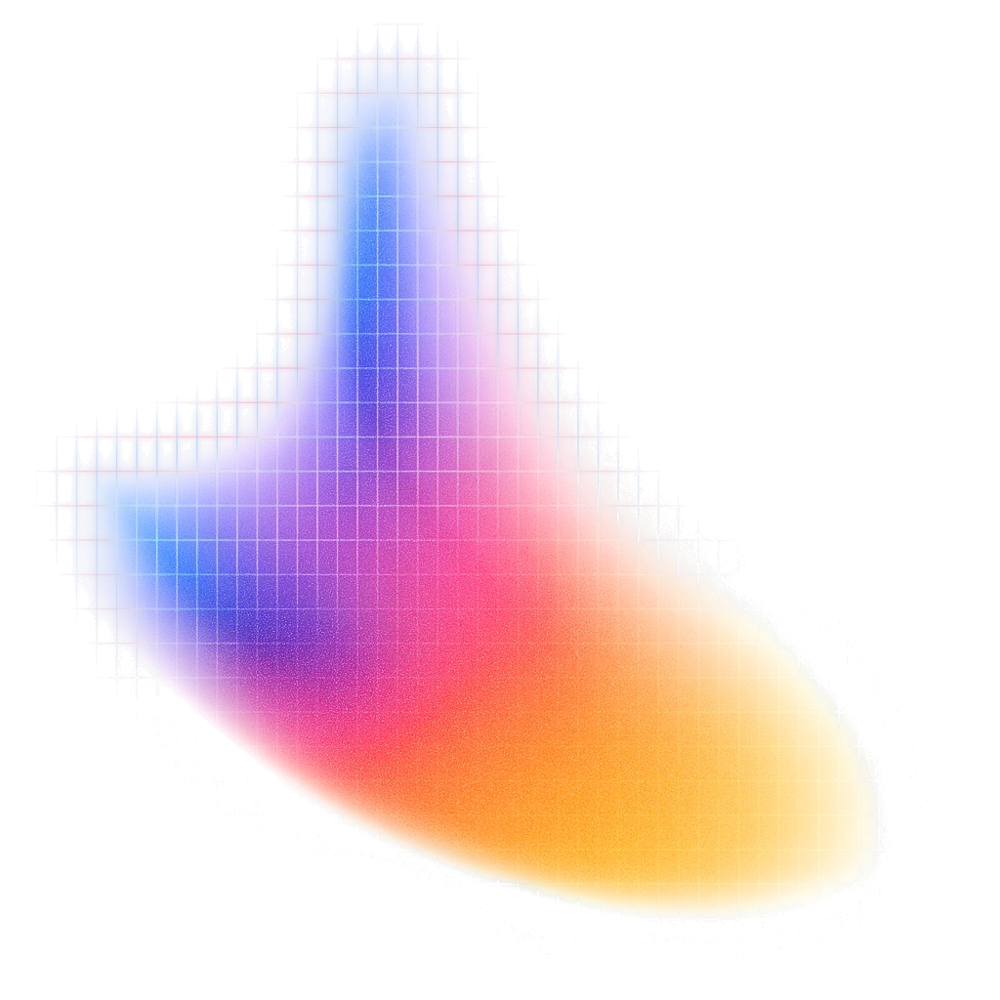
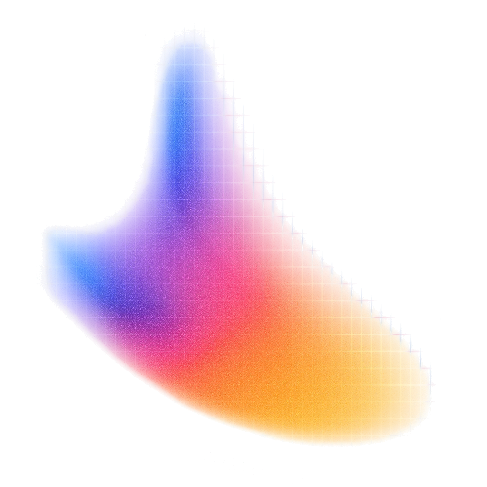
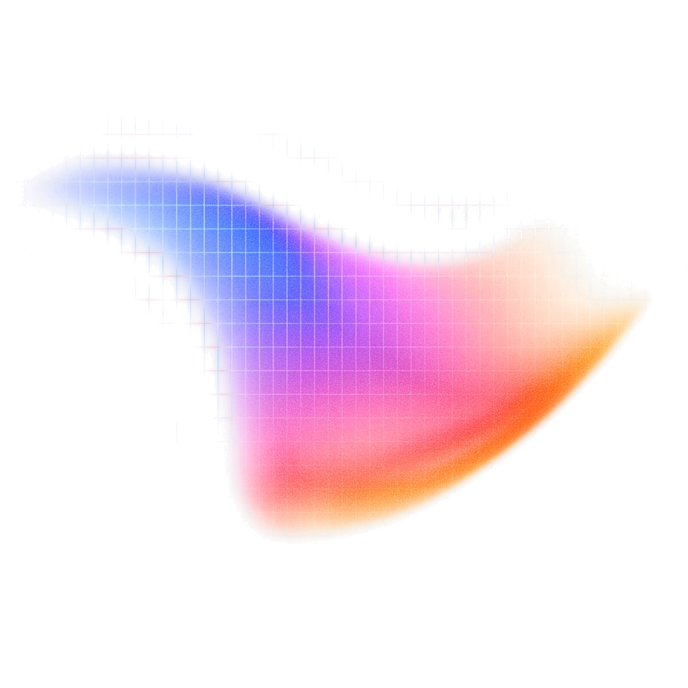

Hoe een taalmodel werkt
Moet dit überhaupt een taalmodel zijn?
Om 13:30 heb je
Open je tool in je eigen map.
Claude
Codex
Loopt iets vast van vorige week? Tafel achteraan. De rest gaat door.
Wat deed je AI vorige week?
.claude/skills/opzet/SKILL.mdgit clone, git commit, git pushgh pr create: GitHub, vanuit de terminalCLAUDE.md → AGENTS.md → context.md, bij elke start ingeladenVerborgen mappen zien
Een map met een punt ervoor is verborgen: .claude/
Terminal:
ls -aTerminal:
dir -ForceOpen en lees
CLAUDE.mdin je eigen map
AGENTS.mdtwee mappen hoger
.claude/skills/opzet/SKILL.mdhet recept van vorige week

Wanneer werd AI uitgevonden?
1956
1950: Turing bedenkt zijn test.
1956: het vak krijgt zijn naam.
2022: ChatGPT.
ChatGPT is het kleinste bolletje.
AI
Ja, nee, of hangt ervan af?
Getraind, dan bevroren. Leert niet uit jouw gesprekken.
Geheugen is een bestand dat ingeladen wordt. Jij maakte er vorige week een: context.md.
Veel kennis, met gaten en een einddatum. Nieuwere modellen zeggen vaker "ik weet het niet". Niet altijd.
Redeneermodellen tellen goed. Voor echte berekeningen: laat het code draaien.
Het redeneert beter dan vroeger. Zonder bewustzijn.
Zijn sterkste punt. Lees altijd na.
Beter dan elke vertaaltool van vroeger.
Jij blijft verantwoordelijk. Daarom test je je Build.
Taal in, taal uit. Lezen, schrijven, samenvatten, tekst sorteren.
Een voorspelling uit cijfers van vroeger.
Een foto of video in, een herkenning uit.
Een vaste regel volstaat. Een formule, een filter, een herinnering.
Het onderwerp beslist niet. De stap wel.
In welk vak valt elke stap?
Zelfde thema, ander vak.

Wanneer betrapte jij je AI op iets verzinnen?
Het regent …
Gent ligt aan de …
De Chiro van Bastiaan werd opgericht in …

Een taalmodel zwijgt nooit.
Het kiest altijd een volgend woord. Veel tekst erachter: meestal juist. Weinig tekst: een gok. Even zeker.
Nigel Richards won het WK Scrabble in het Frans.
Hij spreekt geen Frans.
Hij leerde welke letters samen een geldig woord maken. Niet wat ze betekenen. Een goed beeld van hoe een taalmodel werkt.
Laten we het proberen.
Getraind om te gokken. Nu beloond om te stoppen.
Bron: OpenAI, "Why language models hallucinate", 2025. Korte feitenvragen (SimpleQA).
Een formaat zonder uitweg.
"Kies precies één label." Dan kiest het er één. Ook als het het niet weet.
Geef je tool een uitweg: onzeker
Twee keer. Even zeker. Fout.
Wat zou jij bouwen?
Kies wat je bouwt.
Om 12:00 ligt je taak vast. Geen taak? Neem het voorbeeld in cursus/data/starterset/.
Pauze
Terug om 12:10.
Toon je taak.
De zaal checkt: kunnen twee mensen los van elkaar beslissen of het antwoord juist is?
10 op 10. Goed nieuws?
Werkt alles meteen? Dan is je testset te makkelijk.
Uit de Build-brief.
Bouw. Dan meet je.
Je model ziet alleen wat jij het geeft.
Volgende week: kiezen wat erin hoort, en bewijzen dat het beter werkt.